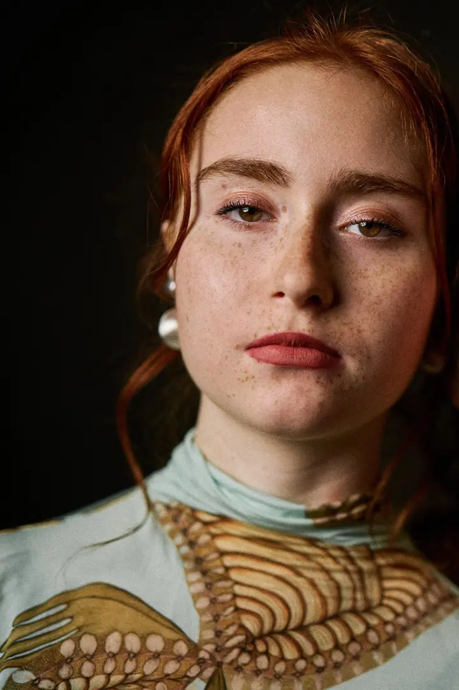

01 / 04
Svatební focení
Do vašeho dne zasahuji co nejméně a spíš pozoruji, co se přirozeně děje. Přirozeně, přátelsky a s citem pro atmosféru, svatby fotím od 8 000 Kč.
Zeptat se na termín→


Mám rád příběhy. Vyprávím je fotkami.
Zeptat se na termín →(01) Ahoj
Jmenuji se Michal Hošek a jsem fotograf z Prahy. Fotím hlavně lidi: svatby , páry, rodiny a portréty . Mám rád přirozené, živé a nenucené fotky a nejvíc mě baví malé momenty mezi lidmi.
(02) Co fotím
01 / 04
Do vašeho dne zasahuji co nejméně a spíš pozoruji, co se přirozeně děje. Přirozeně, přátelsky a s citem pro atmosféru, svatby fotím od 8 000 Kč.
Zeptat se na termín→02 / 04
Sám mám dvě děti, takže vím, že ne vždy jde vše podle plánu. Fotím venku i v ateliéru, od 2 500 Kč.
Zeptat se na termín→03 / 04
Přirozený portrét pro web, sociální sítě nebo práci, i ženský portrét s výraznějším světlem z blesků. Od 2 500 Kč.
Zeptat se na termín→Dále nabízím
Hledáme spolu prostředí, které dává smysl právě vám: město, příroda nebo méně obvyklé kulisy. Zkušenosti před objektivem nepotřebujete.
↗(03) Portfolio
Kliknutím fotku zvětšíte · fotografie jsou ilustrační
(04) Postup
Od první zprávy po hotovou galerii.
Krok 1 z 4
Stačí pár slov o tom, co byste chtěli fotit. Ozvu se a domluvíme se na dalších krocích.
Krok 2 z 4
Společně najdeme termín a místo, které bude dávat smysl právě vám, ať je to město, příroda, váš domov nebo můj ateliér u Anděla.
Krok 3 z 4
Nic nehrajeme. Pozoruji, co se přirozeně děje, a jen když je potřeba, pomůžu s nasměrováním.
Krok 4 z 4
Vyberu a upravím ty nejlepší snímky a pošlu vám je. Domluvíme se předem, jak dlouho to potrvá.

Malé momenty, které by jinak rychle zmizely.
(05) Za objektivem
Na focení mě baví jeho rozmanitost. Potkávám díky němu zajímavé lidi, dostávám se na místa, kam bych se jinak nedostal, a můžu být u chvil, které pro někoho opravdu něco znamenají. Beru to jako výzvu zachytit atmosféru, emoce i obyčejné drobnosti, které by jinak zmizely bez povšimnutí.
Je pro mě důležité, abyste se při focení cítili dobře a uvolněně. Žádné zkušenosti před objektivem ode mě nečekejte. Na svatbě chci být spíš příjemnou součástí dne než někým, kdo na sebe strhává pozornost. Když je potřeba, rád vás nasměruji, ale nechci, aby fotky působily strojeně.
Rád pracuji s přirozeným světlem, ale nebojím se ani blesků. U portrétů a večerních svatebních fotek dodají fotkám výraznější charakter. Fotím venku, doma, ve městě i v přírodě a k dispozici mám také ateliér na Praze 5 u Anděla. Mám dvě děti, takže u rodinného focení vím, že ne vždy jde všechno podle plánu.
Michal
Michal Hošek · Svatební a portrétní fotograf
Vůbec ne. Nic takového od vás nečekám. Přistupuji k lidem přátelsky a nenuceně a nejlepší fotky často vzniknou, když na focení skoro zapomenete.
Svatební focení začíná na 8 000 Kč, rodinné focení a ženský portrét na 2 500 Kč. Přesnou cenu vám rád připravím podle toho, co si představujete.
Nejčastěji v Praze a okolí, ale rád dojedu i dál. Fotit můžeme venku, u vás doma, ve městě, v přírodě nebo v mém ateliéru na Praze 5 u Anděla.
Přirozené světlo mám rád, ale nebojím se ani blesků. U portrétů a večerních svatebních fotek dodají snímkům jinou atmosféru.
(07) Kontakt
Napište pár vět o tom, co si představujete, a termín, který se vám hodí.